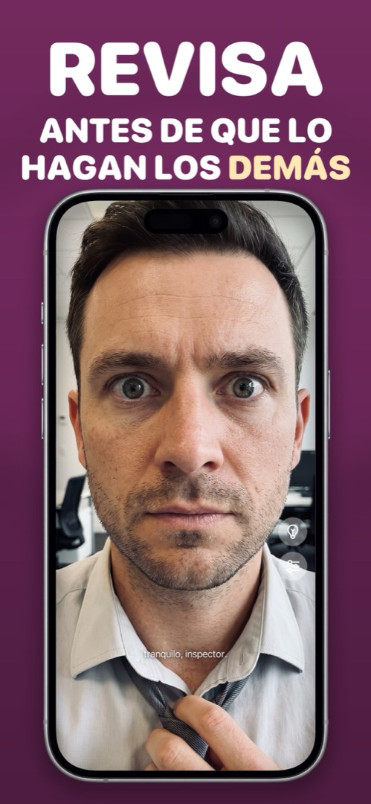

Cómo usar el iPhone como espejo
Estás en el coche, en la cola del baño de la oficina o en la mesa de un restaurante, y lo único que refleja algo es tu móvil. Buenas noticias: un iPhone es un espejo perfectamente útil, siempre que sepas cuál de los tres métodos elegir.
Método 1: el truco de la pantalla apagada
Bloquea el iPhone, inclina el cristal oscuro hacia tu cara y verás un reflejo tenue. Sirve en un apuro, pero es oscuro, sin contraste e inútil salvo que la habitación esté iluminada y el fondo detrás de ti sea oscuro. La opción de emergencia.
Método 2: la app Cámara con la cámara frontal
Abre Cámara, cambia al objetivo de selfie y tienes tu cara en directo. Es lo que hace casi todo el mundo, y para un vistazo de dos segundos vale. Los problemas aparecen cuando intentas usarla de verdad como espejo:
- El disparador está justo donde cae el pulgar, así que haces fotos sin querer (y llenas la biblioteca de primeros planos poco favorecedores).
- La vista previa está llena de modos, la rueda de zoom y el botón del flash.
- El brillo se queda como estaba, normalmente demasiado bajo para ver detalles.
- No hay luz frontal. El «flash Retina» solo se enciende una fracción de segundo cuando disparas.
- Según tus ajustes, lo que ves y lo que se guarda pueden estar reflejados de forma distinta, lo cual confunde (lo explicamos en por qué la cámara frontal invierte tu cara).
Método 3: una app de espejo dedicada
Una app de espejo de verdad usa la misma cámara frontal, pero se comporta como un espejo y no como una cámara. Lo que distingue una buena de un juguete:
- Pantalla completa, de borde a borde, sin disparador que tocar por error.
- Siempre reflejada, igual que un cristal: levantas la mano derecha y sube la mano de la derecha.
- Brillo máximo en cuanto se abre.
- Un aro de luz: los bordes de la pantalla se iluminan para que tu cara se vea incluso en un coche a oscuras.
- Zoom para cejas, dientes y lentillas.
- Nada guardado: ni fotos, ni vídeo, ni datos faciales que salgan del móvil.
Una aclaración, porque Google mezcla las dos cosas: esto no tiene nada que ver con duplicar pantalla. Eso es la función del centro de control que envía tu iPhone al televisor. Una app de espejo es un espejo.
Cómo hacerlo en Mirrorly
Mirrorly está construida exactamente alrededor de esa lista. Este es todo el proceso:
- Descarga Mirrorly en la App Store y ábrela. La cámara frontal se enciende de inmediato: sin menús, sin registro. El brillo sube solo al máximo.
- Sujeta el móvil a la distancia del brazo, como un espejito. Lo que ves está reflejado como en un cristal real.
- Toca la bombilla si la habitación está oscura. Los bordes de la pantalla se convierten en un aro de luz.
- Pellizca o desliza el control de zoom para acercarte a los dientes, las cejas o las lentillas.
- ¿Listo? Cierra la app. No se ha fotografiado, grabado ni subido nada.

Mirrorly llegará muy pronto al App Store.
Un espejo a pantalla completa para iPhone con aro de luz, zoom y brillo máximo. Tres revisiones gratis y después un pago único: sin suscripción, sin fotos guardadas, sin cuenta, sin anuncios.